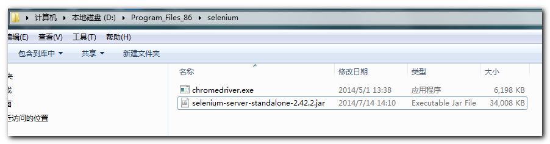
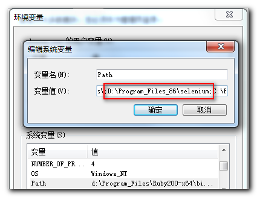
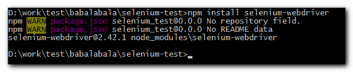

node-selenium学习笔记
下面是环境搭建的过程以及一个简单的例子，我的操作系统是64位win7企业版
1、下载 ChromeDriver
点击下载 如果不能下载，可以到跟我联系
2、配置环境变量
下载下来了，将文件保存到某个目录，然后将此路径添加到环境变量中


3、安装nodejs
这个不多说了，可以到nodejs官网，选择适合的版本进行安装
4、安装selenium-webdriver
新建开发目录，在此目录打开命令行工具，输入命令npm install selenium-webdriver

5、开发代码
官网给的例子是拿google开刀，在国内就用百度开刀吧，下面是一个简单的例子
app.js
var webdriver = require('selenium-webdriver');
var driver = new webdriver.Builder().withCapabilities(webdriver.Capabilities.chrome()).build();
driver.get('http://www.baidu.com/');
driver.findElement(webdriver.By.id('kw1')).click();
driver.findElement(webdriver.By.id('kw1')).sendKeys('http://balabalababala.github.io/');
driver.findElement(webdriver.By.id('su1')).click();
driver.wait(function() {
return driver.getTitle().then(function(title) {
console.log(title);
return true;
});
}, 1000);
//driver.quit();
6、运行代码
node app.js